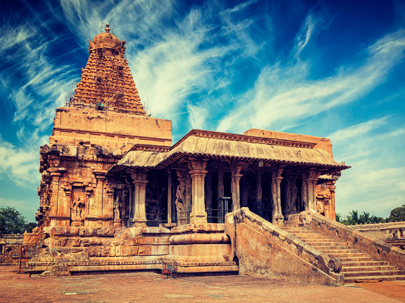

Thanjavur also Tanjore,is a city in the Indian state of Tamil Nadu. Thanjavur is the 11th biggest city in Tamil Nadu. Thanjavur is an important center of South Indian religion, art, and architecture. Most of the Great Living Chola Temples, which are UNESCO World Heritage Monuments, are located in and around Thanjavur. The foremost among these, the Brihadeeswara Temple, is located in the centre of the city. Thanjavur is also home to Tanjore painting, a painting style unique to the region.
Thanjavur is the headquarters of the Thanjavur District. The city is an important agricultural centre located in the Kaveri Delta and is known as the Rice bowl of Tamil Nadu. Thanjavur is administered by a municipal corporation covering an area of 128.02 km2 and had a population of 290,720 in 2011. Roadways are the major means of transportation, while the city also has rail connectivity. The nearest airport is Tiruchirapalli International Airport, located 59.6 km (37.0 mi) away from the city. The nearest seaport is Karaikal, which is 94 km (58 mi) away from Thanjavur.
The city first rose to prominence during the reign of the Cholas when it served as the capital of the empire. After the fall of the Cholas, the city was ruled by various dynasties such as the Mutharaiyar dynasty, the Pandyas, the Vijayanagar Empire, the Madurai Nayaks, the Thanjavur Nayaks, the Thanjavur Marathas and the British Empire. It has been a part of independent India since 1947.
Etymology
The city's name is believed to be derived from the term 'thanjam puguntha oor' which means "the town for refugees", Thanjam puguntha oor-Thanjavur. The term also refers to the hospitality of the natives.However, according to a local legend, the word Thanjavur was derived from "Tanjan", who was a Demon[2][3] who was killed on this very place and that asura asked to make a beautiful city there in Hindu mythology and later the asura(giant) was killed in what is now Thanjavur (formerly Tanjore) by the Hindu god Neelamegha Perumal, a form of Vishnu. The city's name "Thanjavur" might also be derived from the name of a Mutharayar king, "Thananjay" or "Dhananjaya". Thananjaya (Dhananjaya) added to -Oor gives the name Thanjavur. The Kalamalla stone inscription (the first stone inscription) was made by the Renati Chola king, Erikal Muthuraju Dhanunjaya Varma of 575 CE
Some images like:

For booking:
Go to this website for your booking : Book now